Trajectory Generation for Autonomous Excavators Based on Expert Operator Forcing Pattern
Changmuk Kim · 서울대학교 대학원 공학석사학위논문
한줄 요약 — 평지와 세 경사에서 수집한 숙련자 궤적을 지형 경사·최대 깊이에 조건화된 DMP 학습 모델로 일반화하고, 모멘텀 외란관측기로 추정한 버킷 굴착력이 숙련자 힘 패턴을 벗어나면 더 얕거나 깊은 방향으로 실시간 수정해 생산성과 과부하 회피를 함께 달성하도록 설계한 석사학위 연구다.
1.연구 배경 및 동기
토양 모델 대신 숙련자의 궤적과 힘 관리 전략 학습
굴착은 토질, 지형, 장비와 작업자 경험에 따라 상호작용력이 크게 달라지는 반복 작업이다. 기존 최적화 연구는 관절 속도·가속도와 작업시간을 다루거나, 침투·끌기·말아올리기의 고정된 세 단계와 단순 토양모델을 사용했다. 그러나 실제 숙련자는 명확한 단계 경계 없이 연속적으로 굴착하고, 엔진·펌프·장비 반응에서 부하를 감지해 붐을 들거나 내려 궤적을 바꾼다.
학위논문은 안전을 우선하고 그다음 생산성과 연료효율을 확보한다는 관점에서 숙련자의 위치 궤적과 굴착력 패턴을 함께 모사한다. 공칭 궤적은 LiDAR에서 얻은 지형 경사와 최대 깊이를 입력으로 생성하고, 지하 물체나 토양 강도처럼 시각으로 알 수 없는 변화는 실린더 압력과 동역학 모델에서 추정한 굴착력으로 대응한다. 시뮬레이션과 38톤급 상용 굴착기 시험을 모두 포함해 논문형 요약보다 넓은 조건을 검토한다.
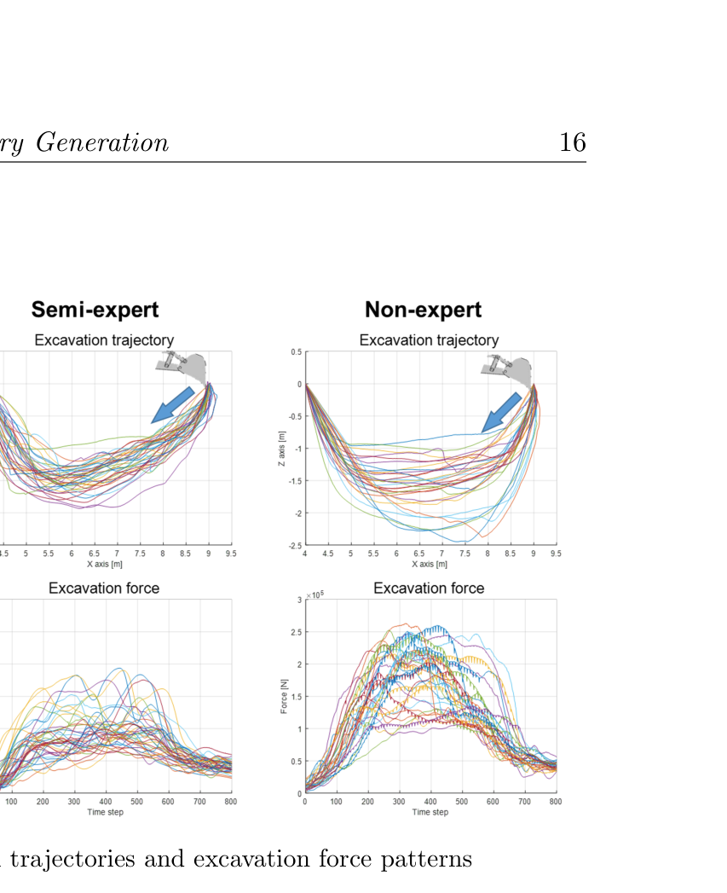
원문 Figure 3.1 · PDF p.25 — Figure 3.1: Excavation trajectories and excavation force patterns
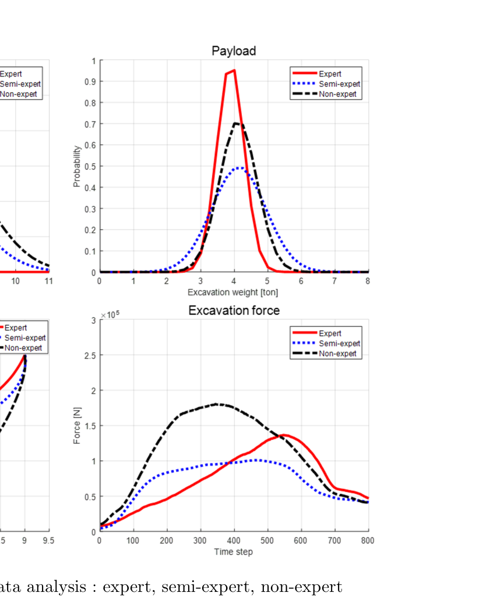
원문 Figure 3.4 · PDF p.27 — Figure 3.4: Excavation data analysis : expert, semi-expert, non-expert
선행 연구의 한계
동역학 최적화 기반 연구는 제한된 상황과 사전 모델에 의존하고 실시간 토양 상호작용을 충분히 반영하지 않았다.
침투·끌기·말아올리기의 고정 단계 궤적은 숙련자의 연속적 실제 작업 형상과 다르다.
토양 동역학은 복잡하고 현장마다 달라 실시간 계획에 사용할 만큼 간결하고 정확한 모델을 만들기 어렵다.
지형 형상만으로 만든 공칭 궤적은 매설물, 잘못된 LiDAR 인식과 토질 변화에 의한 과부하를 감지하지 못한다.
이 연구의 기여
20년 이상 연료소비 패턴 시험을 수행한 숙련자와 준숙련·비숙련 작업자의 궤적·힘·사이클·적재량을 비교했다.
지형 경사와 최대 깊이에 조건화된 숙련자 궤적을 DMP shaping force로 변환해 학습하는 공칭 궤적 생성기를 제안했다.
실린더 압력과 3자유도 굴착기 동역학을 사용한 모멘텀 기반 외란관측기로 버킷 끝 굴착력을 실시간 추정했다.
전문가 힘 패턴과 추정력 차이를 DMP coupling term으로 주입해 지면 법선 방향으로 궤적을 온라인 변조했다.
평지·경사, 점토·자갈, 잘못된 지형 인식, 매설 파이프와 실제 DX380LC 굴착 조건에서 생산성과 안정성을 비교했다.
2.방법론 및 시스템 구성
Doosan DX380LC에 붐·암·버킷·선회축 IMU, 실린더 압력센서, 캐빈 RTK-GNSS와 붐 장착 LiDAR를 사용한다. 굴착 중 선회가 없다고 보고 붐·암·버킷의 3자유도 강체 동역학과 버킷 끝 위치·자세의 SE(2) 좌표를 구성한다. IMU로 관절각·각속도를 측정하고 압력으로 입력토크를 계산한 뒤, 오프라인 식별한 관성·중력·마찰 모델과 모멘텀 외란관측기로 외력을 추정한다.
숙련자 궤적은 버킷이 지면에 닿는 시점부터 굴착 뒤 지면 0.5m 위에 도달할 때까지 자르고 6.5초로 시간 정규화한다. LiDAR 지형은 가우시안 피팅으로 경사각과 최대 깊이를 추출하며, 궤적은 DMP shaping force로 변환해 지형 특징에 따라 생성하도록 학습한다. 실행 중에는 전문가 평균 굴착력 패턴과 현재 추정력의 차이로 피드백 비율을 구하고, 지면과 공칭 궤적의 상대 각도로 법선 방향 변조력을 만든다.
처리 파이프라인
1
숙련자 작업 데이터 분석
평지와 세 경사에서 작업자별 40~50회 굴착 데이터를 수집해 궤적, 힘, 사이클 시간과 적재량을 비교한다. 숙련자가 짧은 시간과 작은 힘 변동으로 유사한 적재량을 만드는 반복 패턴을 학습 대상으로 선택한다.
2
LiDAR 지형 특징 추출
작업면 점군에서 경사각과 최대 깊이를 파라미터화한다. 고차원 점군을 직접 학습하지 않고 두 지형 특징으로 축약해 제한된 전문가 데이터의 효율을 높인다.
3
DMP 공칭 궤적 학습
시간과 공간 스케일을 정규화한 버킷 끝 궤적을 DMP shaping force로 변환하고, 지형 특징과 시간 신호에서 shaping force를 출력하는 학습 모델을 만든다.
숙련자는 침투와 끌기의 경계가 비숙련자보다 덜 뚜렷하고, 다양한 지형에서도 궤적과 힘 패턴의 분산이 작았다. 평균 적재량은 세 작업자 집단이 비슷했지만 숙련자는 평균 사이클 6.19초로 준숙련 7.26초, 비숙련 7.89초보다 짧았고 적재량 표준편차도 0.40톤으로 가장 작았다. 논문은 이 반복 가능한 궤적과 부하 관리 패턴을 자동화의 목표로 삼는다.
숙련자는 20년 이상 굴착기 연료소비 패턴 시험 경험을 가진 작업자다.
준숙련자는 10년 이상 기능시험 경험, 비숙련자는 굴착기 회사의 기능 개발자다.
전문가 인터뷰에서는 버킷 용량의 120~150%를 효율적인 일반 작업 적재량으로 제시했다.
지형 조건부 DMP 공칭 궤적
DMP는 전문가 궤적을 단순 점열이 아니라 목표점으로 수렴하는 비선형 동역학으로 표현한다. 지형 경사와 깊이가 달라져도 학습된 shaping force를 이용해 궤적을 생성하고, 시간이 끝나면 목표점으로 수렴한다. 고차원 점군을 두 개의 지형 특징으로 줄인 것은 학습 데이터가 제한된 상황에서 데이터 효율을 높이는 대신 복잡한 다중 요철을 표현하지 못하는 절충이다.
궤적 시작은 버킷의 지면 접촉, 종료는 굴착 뒤 지면 0.5m 위 도달 시점이다.
모든 학습 궤적의 실행시간을 6.5초로 통일했다.
버킷 끝 위치 궤적과 별도로 버킷 자세를 기하학적으로 결정한다.
외력관측과 법선 방향 온라인 변조
토양·매설물로 힘이 커지면 단순 위치제어는 굴착기를 끌거나 들어 올릴 수 있다. 제안법은 대형 힘센서를 버킷에 설치하지 않고 실린더 압력과 동역학 모델로 외력을 추정한다. 전문가 평균 힘보다 큰 구간에서는 경로를 얕게 만들어 부하를 줄이고, 작은 구간에서는 깊이를 늘려 동일 시간의 적재량을 확보한다.
모멘텀 관측기는 관성행렬 역산과 관절가속도 측정을 피할 수 있다.
coupling term은 DMP 목표점 수렴 구조를 유지하면서 실행 중 궤적을 변경한다.
잘못된 지형 인식과 매설 파이프 시험은 시각에 없는 위험에 힘 피드백이 대응하는지를 평가한다.
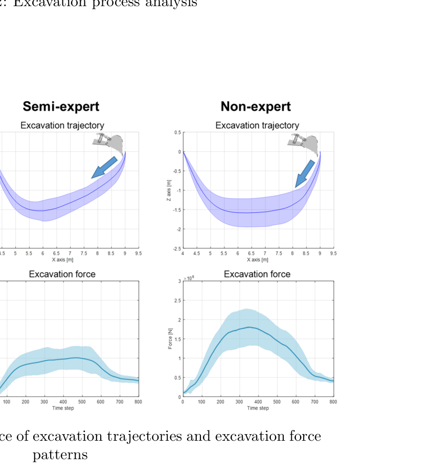
원문 Figure 3.3 · PDF p.26 — Figure 3.3: Mean and variance of excavation trajectories and excavation force patterns
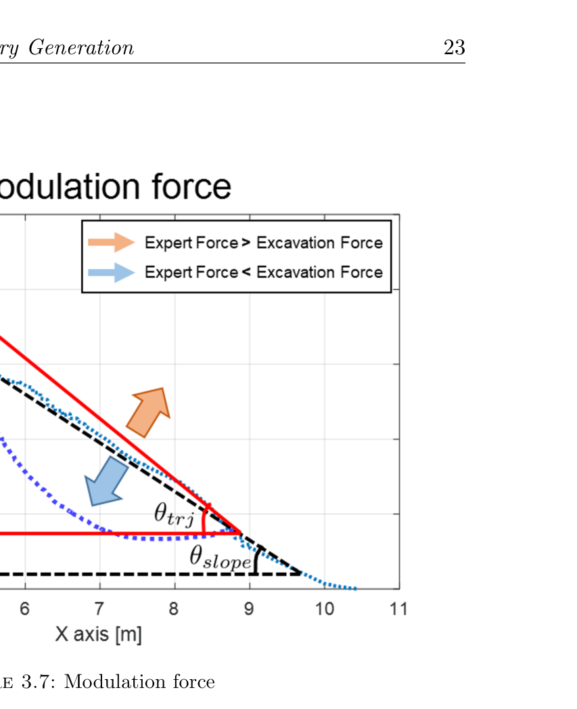
원문 Figure 3.7 · PDF p.32 — Figure 3.7: Modulation force
4.실험 결과
실험 환경·장비·데이터
CM Labs Vortex 시뮬레이터에서 평지·경사 지형의 점토와 자갈 매질을 시험했다.
시뮬레이션에서 공칭 궤적과 힘 변조 궤적을 비교하고, 매질 차이를 반영해 전문가 힘 패턴 크기를 점토 0.4배 또는 자갈 0.5배로 조정했다.
잘못된 지형 특징으로 지나치게 깊은 공칭 궤적을 생성한 조건과 점토 평지에 파이프를 묻은 조건을 별도로 시험했다.
Doosan Infracore 인천 시험장의 Doosan DX380LC에서 평지와 경사면을 각각 공칭·변조 궤적으로 두 번씩 굴착했다.
원문 Figure 4.5 · PDF p.42 — Figure 4.5: Excavation test with the obstacle in the ground
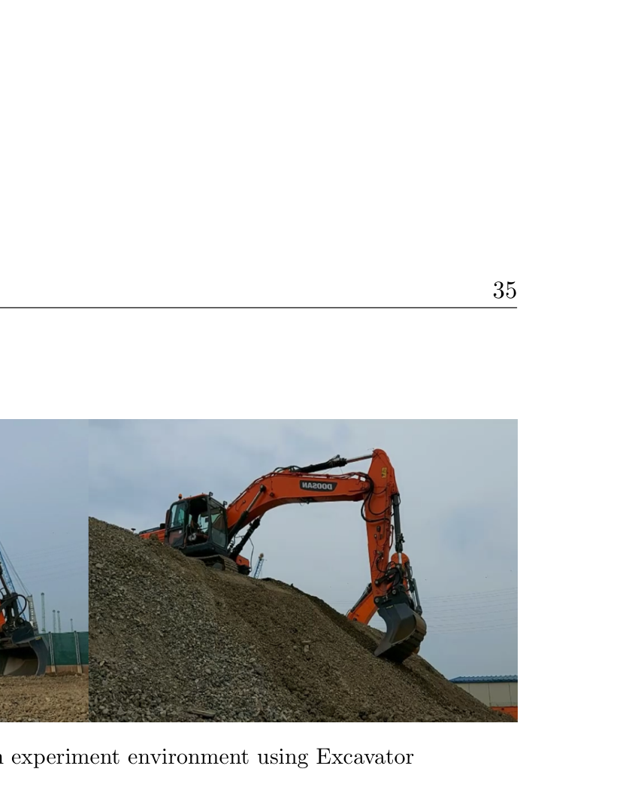
원문 Figure 4.7 · PDF p.44 — Figure 4.7: Excavation experiment environment using Excavator
핵심 결과 해석
작업자 분석에서 숙련자의 평균 사이클은 6.19초로 준숙련 7.26초와 비숙련 7.89초보다 짧았고, 평균 적재량은 3.89톤으로 세 집단이 비슷했지만 표준편차가 0.40톤으로 가장 작았다. 시뮬레이션의 변조 궤적은 평지 점토·자갈에서 공칭보다 각각 6.1%, 1.4%, 경사 점토·자갈에서 14.4%, 10.7% 더 많은 토사를 담았다. 잘못된 지형 인식에서는 공칭 궤적이 과부하로 굴착기를 끌었지만 변조 궤적은 2.4% 더 높은 적재량과 안정적인 힘 추종을 보였다. 매설 파이프 조건에서도 공칭은 굴착기를 들어 올린 반면 변조는 파이프에서 멀어지는 방향으로 움직이며 적재량을 6.2% 높였다.
실차 평지에서 공칭 두 회는 3.059톤과 2.505톤, 변조 두 회는 4.381톤과 4.176톤이었다. 평균으로는 약 2.78톤에서 4.28톤으로 53.79% 증가해 3톤 버킷의 전문가 효율 범위 3.6~4.5톤에 진입했다. 경사면에서는 공칭 3.633톤·3.826톤, 변조 4.457톤·4.523톤으로 평균 약 3.73톤에서 4.49톤, 20.39% 증가했다. 다만 평지의 힘 패턴 추종은 경사보다 열세였고, 논문은 평지 전문가 데이터 부족으로 평균 패턴이 충분히 대표적이지 못했다고 설명한다.
정량 결과
평가 항목
정량 결과
조건·맥락
원문 근거
숙련자 평균 사이클 시간
6.19초
준숙련 7.26초, 비숙련 7.89초와 비교
PDF p.27
숙련자 적재량 반복성
평균 3.89톤, 표준편차 0.40톤
준숙련 표준편차 0.81톤, 비숙련 0.55톤
PDF p.27
평지 시뮬레이션 적재량
점토 1.9369→2.0578톤, 자갈 1.7094→1.7319톤
공칭→힘 변조 궤적
PDF p.38
경사 시뮬레이션 적재량
점토 1.9518→2.2332톤, 자갈 1.7055→1.8882톤
공칭→힘 변조 궤적
PDF p.39
잘못된 지형 인식 조건
1.9772→2.025톤, +2.4%
과도하게 깊은 공칭 궤적 대비 실시간 변조
PDF p.41
매설 파이프 조건
1.8687→1.9847톤, +6.2%
공칭 궤적 대비 장애물 접촉력 기반 변조
PDF p.43
실차 평지 평균 적재량
약 2.78→4.28톤, +53.79%
DX380LC 공칭 두 회와 변조 두 회 평균
PDF p.45
실차 경사 평균 적재량
약 3.73→4.49톤, +20.39%
DX380LC 공칭 두 회와 변조 두 회 평균
PDF p.45
실패 사례와 경계조건
평지 실차 시험에서는 전문가 힘 패턴 추종이 경사면보다 낮았고, 저자는 평지 데이터 부족을 원인으로 설명했다.
잘못된 지형 특징으로 생성한 공칭 궤적은 과부하 때문에 굴착기 본체를 끌었다.
매설 파이프 조건의 공칭 궤적은 장애물 반력으로 굴착기를 들어 올려 파이프 손상 가능성을 보였다.
공칭 궤적은 토양의 실제 강도·밀도를 직접 사용하지 않아 같은 지형 형상에서도 부하가 달라질 수 있다.
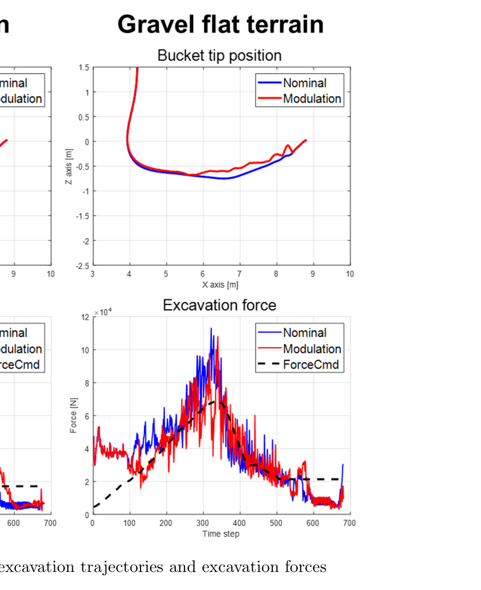
원문 Figure 4.2 · PDF p.38 — Figure 4.2: Flat terrain excavation trajectories and excavation forces
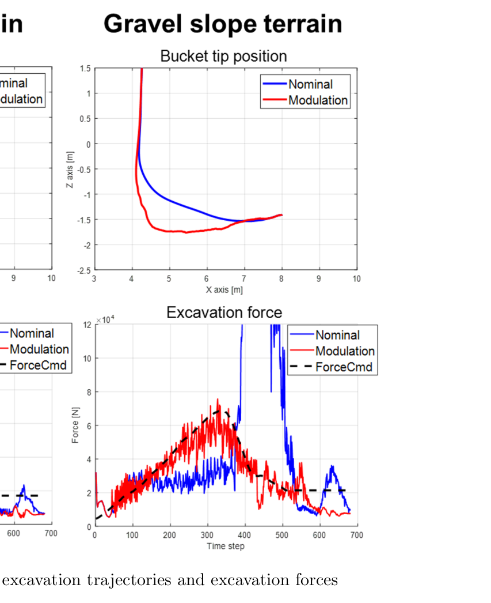
원문 Figure 4.3 · PDF p.39 — Figure 4.3: Slope terrain excavation trajectories and excavation forces
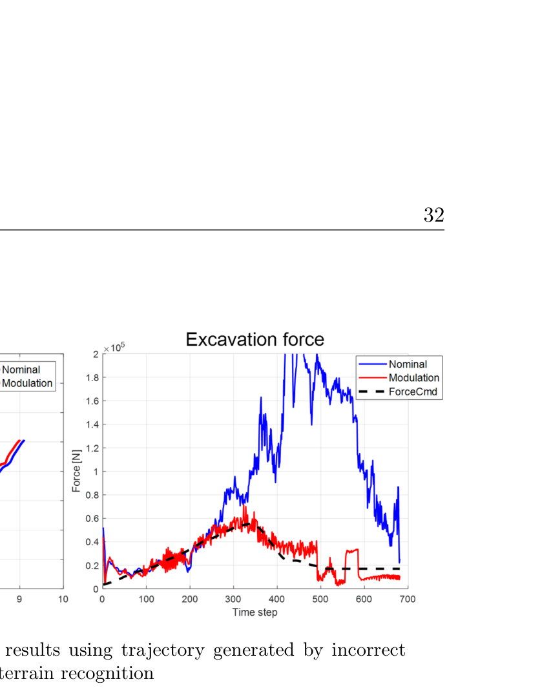
원문 Figure 4.4 · PDF p.41 — Figure 4.4: Excavation test results using trajectory generated by incorrect terrain recognition
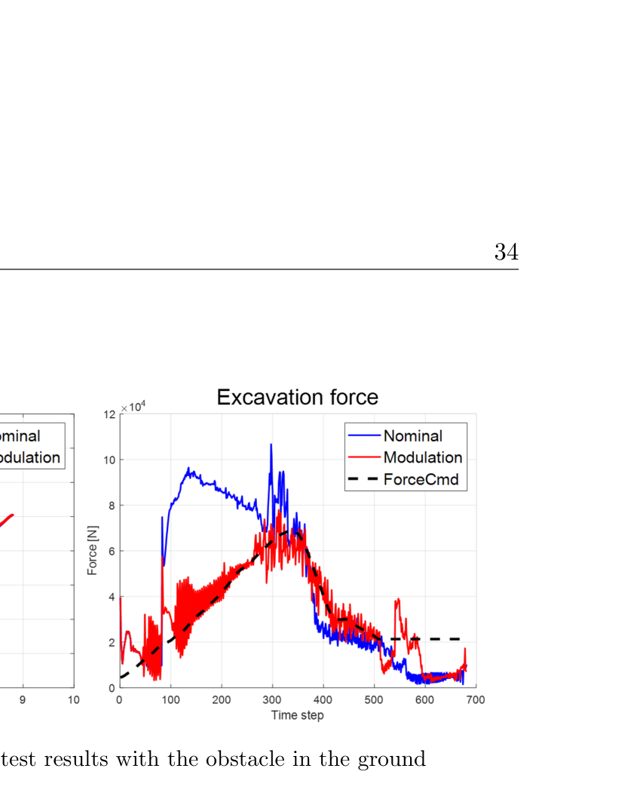
원문 Figure 4.6 · PDF p.43 — Figure 4.6: Excavation test results with the obstacle in the ground
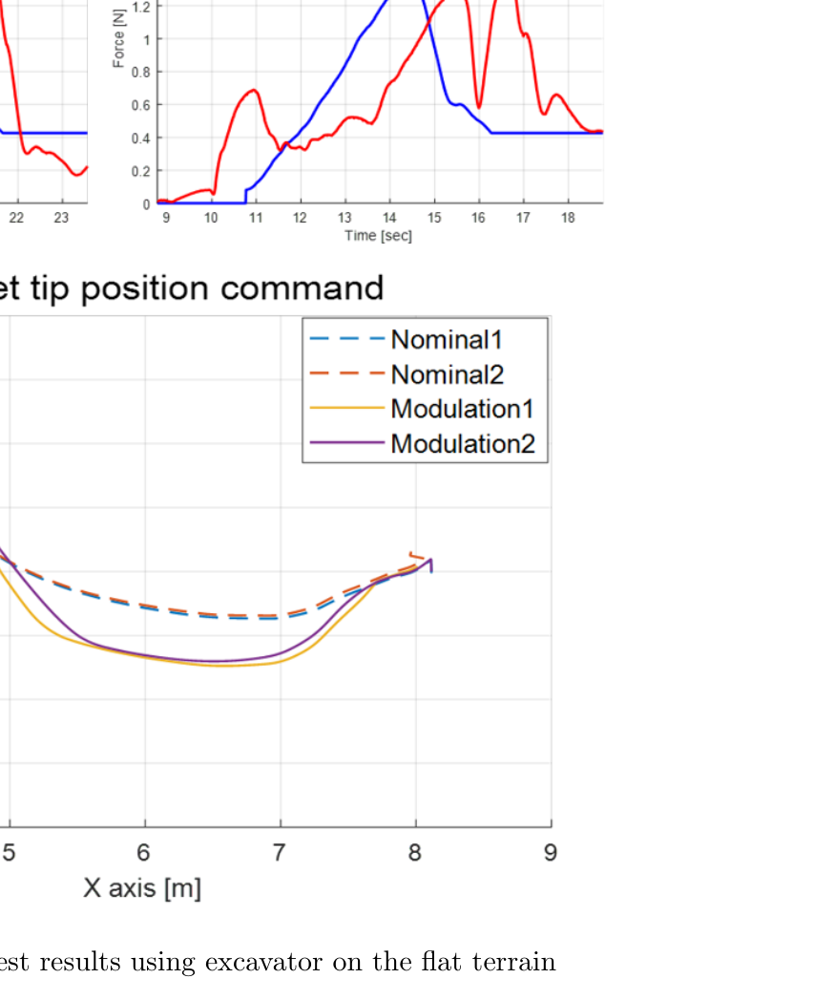
원문 Figure 4.8 · PDF p.46 — Figure 4.8: Excavation test results using excavator on the flat terrain
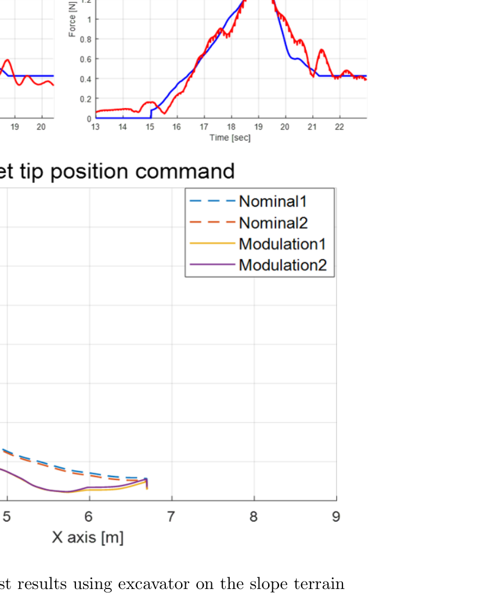
원문 Figure 4.9 · PDF p.47 — Figure 4.9: Excavation test results using excavator on the slope terrain
5.한계 및 향후 연구
현재 한계
실차 시험환경 제약 때문에 다양한 실제 토질을 비교하지 못했다.
토질 변화는 전문가 힘 패턴의 모양이 아니라 크기만 바꾼다는 가정을 시뮬레이션에 사용했으나 실험적으로 확인하지 않았다.
지형을 경사각과 단일 최대 깊이로 축약해 복수 요철·암석·층상 토질을 표현하지 못한다.
사지탈 평면의 단일 굴착 동작만 다루며 선회, 적재와 차체 이동을 포함한 전체 사이클 계획이 아니다.
coupling gain과 fmargin을 조건별로 수동 설정해 장비·토질이 바뀔 때 재조정이 필요하다.
모멘텀 외란관측기의 정확도는 동역학·마찰 식별과 압력센서 오차에 영향을 받는다.
향후 연구
다양한 실제 토질에서 토양 종류가 힘 패턴의 크기만 바꾼다는 가정을 검증한다.
토질 정보를 지형 특징에 추가해 환경별로 더 안정적인 궤적을 생성한다.
장비와 작업면에 맞는 coupling gain과 피드백 마진을 자동 최적화한다.
여러 요철과 매설물 가능성을 표현하는 풍부한 지형·토질 임베딩으로 확장한다.
선회·적재·이동을 포함한 상위 작업계획과 DMP 단일 굴착 프리미티브를 연결한다.
6.한마디로 정리
핵심 방법은?
숙련자 궤적을 지형 조건부 DMP로 학습하고, 압력·동역학 기반 추정력이 전문가 힘 패턴과 다르면 지면 법선 방향 coupling term으로 궤적을 수정한다.
핵심 결과는?
실차에서 변조 궤적은 공칭 대비 평지 53.79%, 경사 20.39% 더 많은 적재량을 기록했고 위험 시뮬레이션에서도 장비 끌림·들림을 줄였다.
한계는?
다양한 실제 토질 검증이 없고 토질 효과와 coupling gain이 수동 가정에 의존하며, 지형 표현과 작업 범위가 2차원 단일 굴착에 한정된다.
#작업·궤적계획#학습·RL·IL·VLA#제어·MPC#DMP#MLP#숙련자 시연#외란관측기#coupling term 궤적 변조
나의 의견 / 우리 연구와의 연관성
석사논문은 2020 IROS 논문의 압축된 핵심보다 넓게 숙련도 분석, 점토·자갈 시뮬레이션, 지형 오인식과 매설물 조건, 실차 적재량을 제공한다. 자율굴착 연구에서 공칭 작업 프리미티브와 안전·생산성 피드백을 분리해 설계하는 구체적 사례로 사용할 수 있다.
우리 연구에 적용하려면 DMP 앞단에 3차원 지형·굴착성 지도를, 뒤에는 유압 제약 제어와 미끄럼·전복 안전층을 연결할 수 있다. 이때 전문가 힘 패턴은 절대 정답이 아니라 장비·토질별로 적응해야 하는 참조로 취급해야 한다.
전문가 시연을 적은 데이터로 구조화하는 단일 굴착 motion primitive의 기준선이 된다.
압력 기반 외력 추정은 매설물·토질 급변을 감지하는 안전 피드백으로 활용할 수 있다.
실차 적재량과 부하를 함께 평가해 생산성만 최대화하는 계획의 위험을 줄인다.
토질 임베딩과 자동 gain 조정을 추가하면 현장 간 일반화 연구로 확장할 수 있다.
7.전체 그림·표
본문 핵심 위치에 배치하지 않은 원문 Figure와 Table을 원문 페이지 순서로 수록한다.
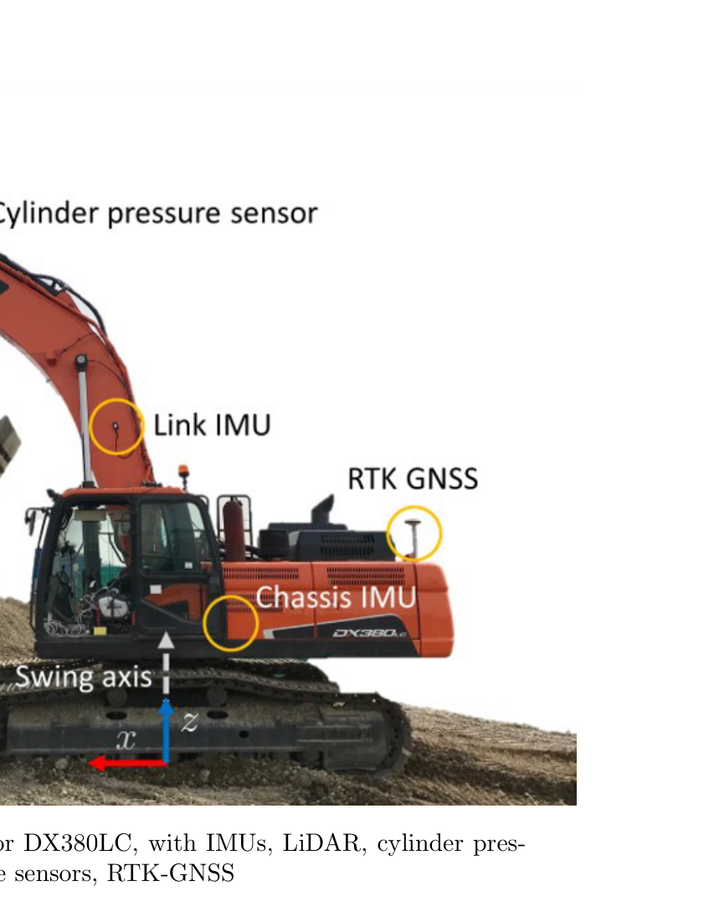
원문 Figure 2.1 · PDF p.16 — Figure 2.1: Doosan excavator DX380LC, with IMUs, LiDAR, cylinder pres- sure sensors, RTK-GNSS
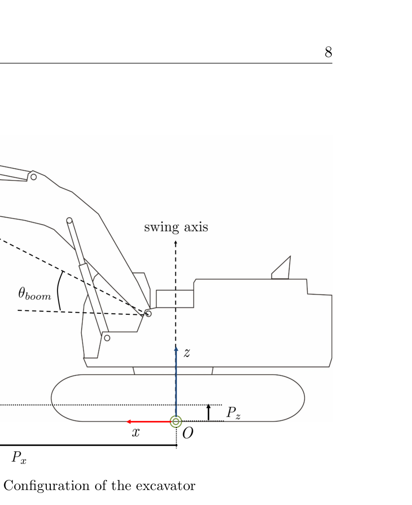
원문 Figure 2.2 · PDF p.17 — Figure 2.2: Configuration of the excavator
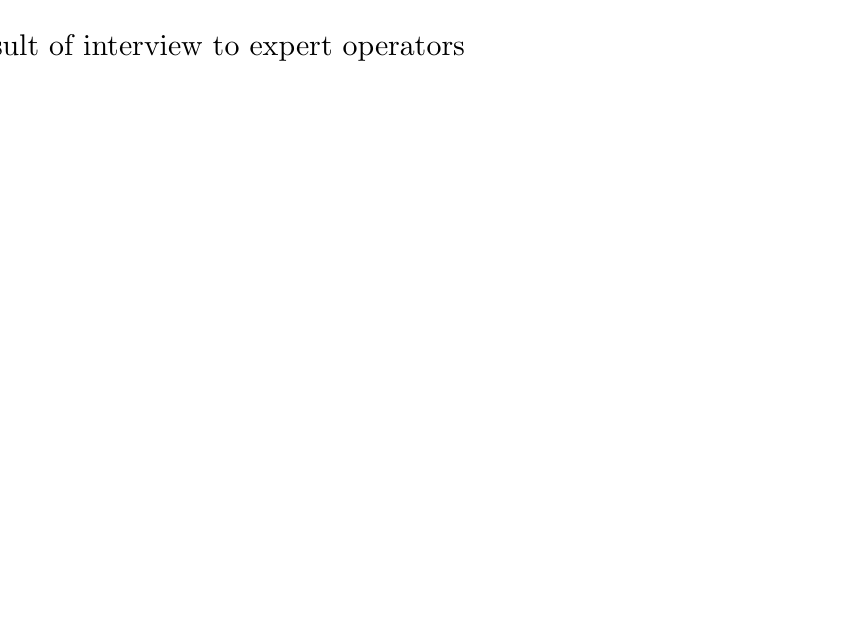
원문 Table 3.1 · PDF p.24 — Table 3.1: A result of interview to expert operators
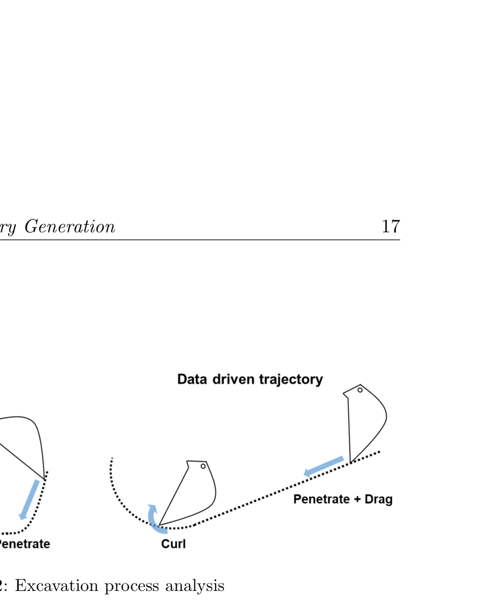
원문 Figure 3.2 · PDF p.26 — Figure 3.2: Excavation process analysis
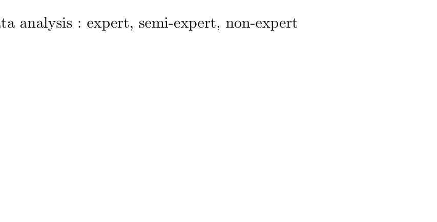
원문 Table 3.2 · PDF p.27 — Table 3.2: Excavation data analysis : expert, semi-expert, non-expert
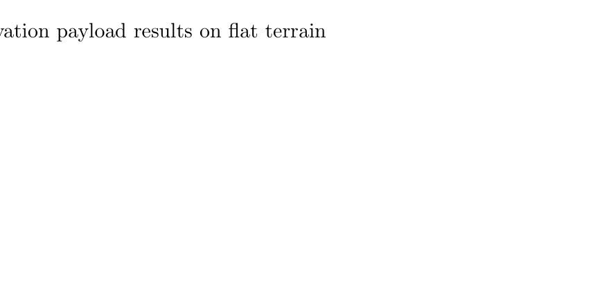
원문 Table 4.1 · PDF p.38 — Table 4.1: Excavation payload results on flat terrain
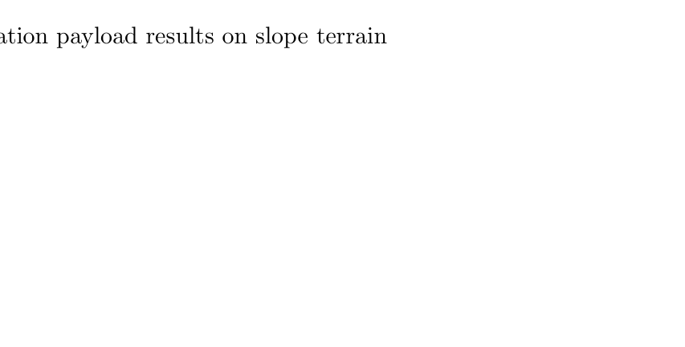
원문 Table 4.2 · PDF p.39 — Table 4.2: Excavation payload results on slope terrain
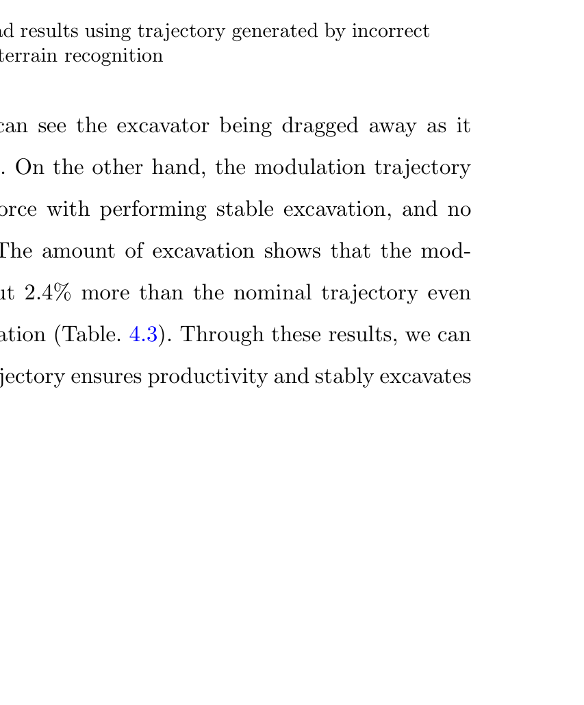
원문 Table 4.3 · PDF p.41 — Table 4.3: Excavation payload results using trajectory generated by incorrect terrain recognition
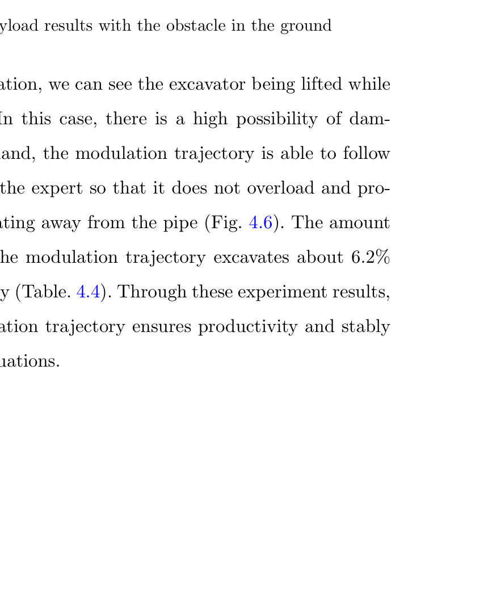
원문 Table 4.4 · PDF p.43 — Table 4.4: Excavation payload results with the obstacle in the ground
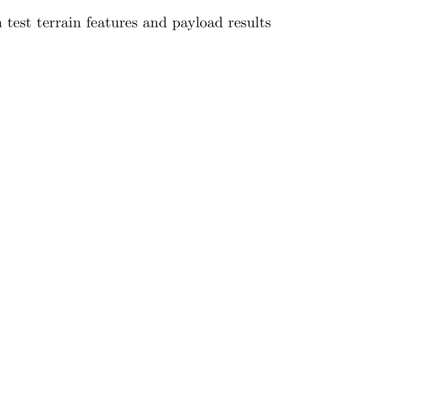
원문 Table 4.5 · PDF p.48 — Table 4.5: Excavation test terrain features and payload results